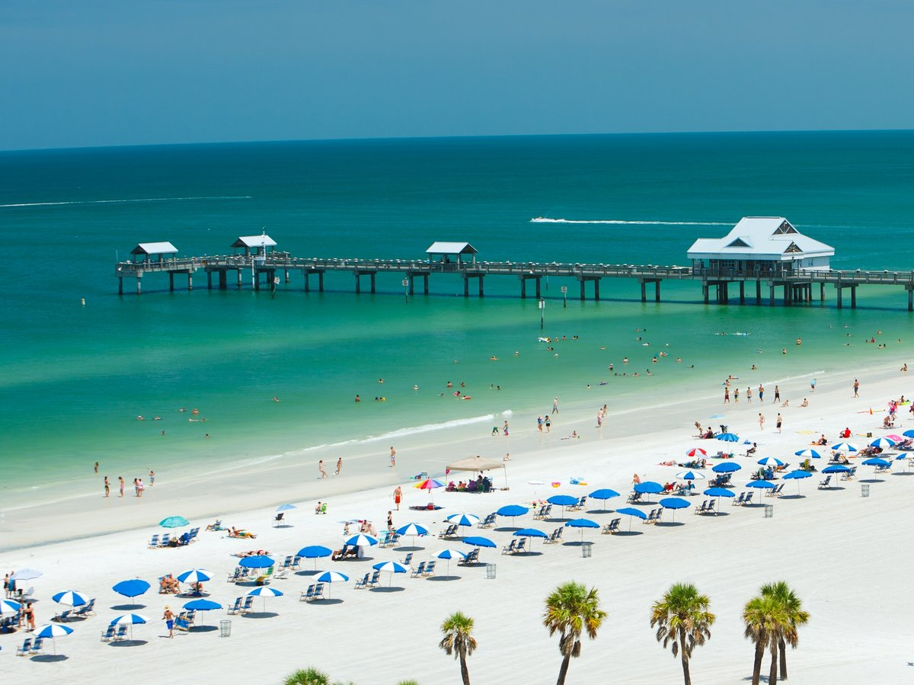

I Lived in Clearwater, Florida for most of all my life. I grew up with the ocean, palm trees and beaches so moving to Maine from Florida at the age of 17 was a huge culture shock for me. All the towns were really quiet compared to what I was used to, there was no more police siren white noise constantly running in the background of my life. There are things that I never enjoyed about Florida such as the weather, the traffic, the tourism, and of course the annoying drug addicts and criminals everywhere. Despite these terrible things there still are things that I do miss about Florida. When I left Florida, I was also leaving everything I knew behind, I was leaving family, friends, school, everything that I had become accustomed to living there for so long.
